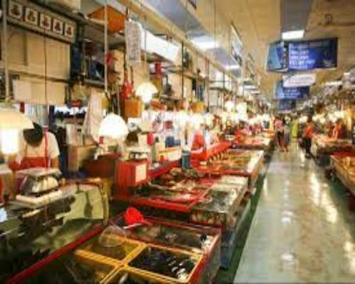

자갈치 시장
Jagalchi Market
- 
주소
축제 정보
특징
부산광역시 중구 남포동 자갈치해안로 52
매년 10월 축제를 개최하게 되었는데 ‘오이소! 보이소! 사이소!’라는
슬로건으로 부산 자갈치 축제를 개최하고 있다.
자갈치시장이라는 명칭은 일대에 자갈이 많아 자갈치라고
부른다는 설과 생선 이름인 갈치에서 유래하였다는 두 가지 설이 전해진다.
아무래도 싱싱한 해산물을 많이 있어 많은 사람들이
해산물을 즐기러 오고
싱싱한 해산물로 만들어진 생선구이,회 등이 유명하다.